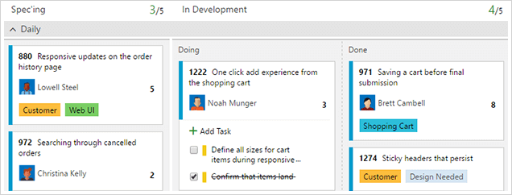
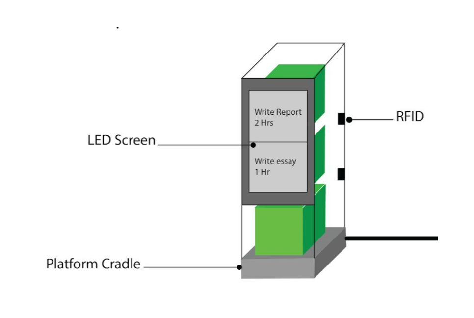

Concept
In 2018, I began my first paid job as a software developer. It was a very-eye opening experience to how a typical work environment operates.
What I found was that rather than everyone doing their own individual work, employees are typically divided into teams of 5-7. These teams generally take ownership of a product or a particular aspect of a product and have a variety of skills to ensure a diverse set of problem solvers.
A common challenge in a group environment is how to delegate tasks. Problems include how to gauge how long a task will take, who gets assigned the work, and checking if the team is on track to achieve vital goals.
To do this, we divide tasks into two-week blocks known as "sprints". At the start of the sprint, the manager decides what things need to be done in the two-week time span. Tasks become delegated to team members based on their availability and how suited their skill set is to complete the work. Before the task is entrusted to them, they make a numerical estimate to the team of how many hours it will take. These estimations are not binding, but rather a signal to the manager of how difficult the task may be. The manager adds up all the hours and sees if anyone is overloaded or underloaded with work.
Other Implementations
These tasks are managed using the web application Visual Studio Team Services (or VSTS) by Microsoft. They utilise the Kanban Board method of showing the team's progress across the sprint. There are four columns labelled "New", "Active", "Resolved" and "Closed", each of which corresponds to the status of a task. As each team member works on their task, they move their box representing their task along the Kanban Board to signify to the other team members their progress.
Typically with university study, I found tasks overwhelming and put them off for some time. With VSTS, tasks get broken down into manageable parts. Seeing tasks broken down motivates me to get started and therefore get the momentum to finish the goal faster. The estimation of hours is also especially useful because I can manage the tasks based on my ever-changing schedule and availability.
As time went on, I felt that there were a few issues with VSTS. The first of which is that it was very 'departmentalised'. Team members only tended to look at their own tasks without any regard for what is other tasks are being completed around them. This means that other team members can lack knowledge of what the whole team is doing. When someone needs help with their work, they generally don't get it until they are explicitly asked in person to come over.
Solution
I believe this idea of task motivation can be expanded further. VSTS lacks the idea of motivating team members to work together, not just completing their own tasks. There could be many ways in which team members are coaxed into working together more. The first most important way is to make the progress of each team member more public. If your pace is reported to the public often, then it motivates a person to complete the task to look good in front of their peers.
A study from Salesforce found that 89% of employees and CEOs cited lack of collaboration and ineffective communication as the source of workplace failures (Stein, 2012). Companies are always looking for ways for employees to communicate their work to one another to clear up any unspoken issues and to help each other out when in need.
The second most important feature is using emotional design. Persuasive design is a well-studied area in Human-Computer Interaction. Products can be designed in such a way such that it elicits good behaviours. Corporate culture is essential to the success of the product, and I want to develop a product in such a way that good corporate values such as helping out others in need and communicating with others become a part of the everyday workflow.
Xu et al. (2018) highlight three strategies to tackle the largest problems for designing persuasive technology. The first of which is to ensure compatibility with current technologies. The idea of Cubits is that it will augment current task management software, rather than replace it. Secondly, ensure that specialised and individual needs are met. Finally, ensure the design captures the full scope of the user's lifestyle.
Therein lies the underlying research question:
"How can we motivate employees to complete their tasks more effectively and efficiently?"
With the help of three others, I explored this problem space. We thought of two ways in which we can instil good work habits: the first is to represent task as physical objects.
We decided that tasks would come in the form of cubes. Cubes are a cliche in this course, but for an excellent reason. Cubes are cheap to make, modular, stackable, and sturdy. All of these are important attributes to have in a physical device. Each cube will be loaded up with one task for the sprint. Each cube will change colour depending on the priority of the task and the time left. Cubes would be stackable to enforce a sense of order.
Measures will be taken to ensure that the user is motivated by emotion to get the tasks done. To do this, we will use sounds and colour to elicit a visceral reaction to task status updates. Sounds and colour mean that the status of cubes can be understood at a glance, even without understanding why they updated. We will also use personification to create a positive working environment, but also increase the guilt when running out of time to complete a task.
Personification has been proven to help out in work-based environments previously. Andre et al. (1998) explored how using personification can help with constructing presentations. Users rated the tasks as 'less difficult' when they are accompanied by an on-screen assistant. Almost all of the users rated the on-screen assistant as 'helpful' in finishing their tasks earlier.
These are the concepts that form the basis of Cubits.
References:
André, E., Rist, T., & Müller, J. (1998). Integrating Reactive and Scripted Behaviors in a Life-like Presentation Agent. In Proceedings of the Second International Conference on Autonomous Agents (pp. 261–268). New York, NY, USA: ACM. https://doi.org/10.1145/280765.280842
Stein, N. (2012). Is Poor Collaboration Killing Your Company? [Infographic]. Retrieved April 23, 2018, from https://www.salesforce.com/blog/2012/09/nick-stein-work-post-2.html
Microsoft. (n.d.). Agile Tools | Visual Studio Team Services. Retrieved June 9, 2018, from https://www.visualstudio.com/team-services/agile-tools/
Redback Technologies. (2017, April 10). Renewable energy tech start-up strikes a deal with Energy Queensland. Retrieved June 9, 2018, from https://redbacktech.com/2017/04/10/renewable-energy-tech-start-up-strikes-a-deal-with-energy-queensland/
Xu, J., Chen, P., Uglow, S., Scott, A., & Montague, E. (2012). Design Challenges and Guidelines for Persuasive Technologies that Facilitate Healthy Lifestyles. Computer Technology and Application, 3(2), 140–147.